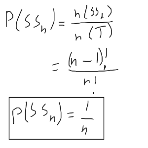

Secret Santa Algorithm
Read Time: 3 Minutes
Secret Santa is a common christmas tradition in which every participant is tasked with giving a gift to another randomly chosen participant, usually as names in a hat. Given a set of people, P, find an algorithm to assign every pn ∊ P a partner such that no more than one loop is created. This can be treated like a digraph G = (V, E) where V = P and E(pm, pn) has person pm give a gift to person pn.

The task is to find an algorithm that creates a digraph with a single hamiltonian walk that covers all verticies. The revelation needed to solve this problem is the fact that such a graph will always be circular.

This means that such a graph can be represented in a list such that every person in the list gives a gift to the person after them. The person at the end of the list gives a gift to the person at the beginning. This means the perfect secret santa algorithm is akin to shuffling cards.
Given a the list of people create an empty list and randomly chose a person from the first list to fill the second every step then remove them from the original list, this would be done by generating a random number between [0, the current length of the original list).
Here is the python implementation.
import random
people = list(range(int(input())))
order = []
while people:
i = random.randint(0, len(people)-1)
order.append(people[i])
del people[i]
print(order)
The probability that picking from a hat creates a perfect secret santa graph, one where no more than one loop is created, can be found using this abstraction. Knowing that the all perfect graphs can be represented as a list we can find the total number of perfect graphs. The total number of lists is n! but every list has an equivalent list shifted one across, e.g. {A, B, C} ≡ {C, A, B}, therefore the total number of secret santa graphs with n nodes is (n-1)!, as every list has n equivalent lists.
The total number of possible hat pickings can be found when realising that every node has an indegree and outdegree of one. This means the adjacency matrix would be all zeros except for one '1' in each column and row.

This means there is n! total possible pickings. As such the probablity of a hat picking being a perfect secret santa graph is 1/n.
